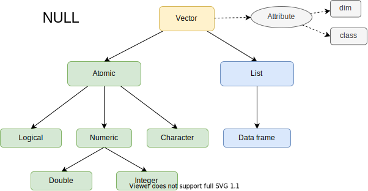

2 Vector
Last updated: 2022-04-08
2.1 Overview
2.2 Atomic Vectors
- logical
- numeric: integer, double
- character
2.2.1 Scalar
lgl_var <- c(TRUE, FALSE)
int_var <- c(1L, 6L, 10L)
dbl_var <- c(1, 2.5, 4.5)
chr_var <- c("these are", "some strings")typeof(lgl_var)
#> [1] "logical"
typeof(int_var)
#> [1] "integer"
typeof(dbl_var)
#> [1] "double"
typeof(chr_var)
#> [1] "character"2.2.2 Longer Vector
c() will flattens
c(c(1, 2), c(3, 4))
#> [1] 1 2 3 42.2.3 Missing Value
NA will propagate except
NA ^ 0
#> [1] 1
NA | TRUE
#> [1] TRUE
NA & FALSE
#> [1] FALSEChecking NA
Don’t use this to check NA
x <- c(NA, 5)
x == NA
#> [1] NA NAUse this to check NA
is.na(x)
#> [1] TRUE FALSETypes of NA
typeof(NA_integer_)
#> [1] "integer"
typeof(NA_real_)
#> [1] "double"
typeof(NA_character_)
#> [1] "character"This distinction is usually unimportant because NA will be automatically coerced to the correct type when needed.
2.2.4 Testing
Avoid is.vector(), is.atomic(), and is.numeric(): they don’t test if you have a vector, atomic vector, or numeric vector; you’ll need to carefully read the documentation to figure out what they actually do.
Use this.
is.logical(T)
#> [1] TRUE
is.integer(1L)
#> [1] TRUE
is.double(2)
#> [1] TRUE
is.character("Hi")
#> [1] TRUE2.2.5 Coercion
Combining different types of atomic vector they will be coerced in this order
str(c(F, 1))
#> num [1:2] 0 1
str(c(1, "a"))
#> chr [1:2] "1" "a"Coerce Logical to Numeric can be useful
x <- c(FALSE, FALSE, TRUE)
as.numeric(x)
#> [1] 0 0 1
# Total number of TRUEs
sum(x)
#> [1] 1
# Proportion that are TRUE
mean(x)
#> [1] 0.3333333Deliberate coercion with warning message
as.integer(c("1", "1.5", "a"))
#> Warning: NAs introduced by coercion
#> [1] 1 1 NA2.3 Attributes
2.3.1 Set and Get Attributes
Set & Get specific attributes: attr()
Set all attributes: structure()
Get all attributes: attributes()
a <- 1:3
attr(a, "x") <- "abcdef"
attr(a, "x")
#> [1] "abcdef"attr(a, "y") <- 4:6
str(attributes(a))
#> List of 2
#> $ x: chr "abcdef"
#> $ y: int [1:3] 4 5 6# Or equivalently
a <- structure(
1:3,
x = "abcdef",
y = 4:6
)
str(attributes(a))
#> List of 2
#> $ x: chr "abcdef"
#> $ y: int [1:3] 4 5 6Attributes should generally be thought of as ephemeral.
attributes(a[1])
#> NULL
attributes(sum(a))
#> NULLThere are only two attributes that are routinely preserved:
names
dim
Create S3 class to preserve other attributes.
2.3.2 Names
You can name a vector in three ways:
# When creating it:
x <- c(a = 1, b = 2, c = 3)
# By assigning a character vector to names()
x <- 1:3
names(x) <- c("a", "b", "c")
# Inline, with setNames():
x <- setNames(1:3, c("a", "b", "c"))Remove names from a vector by using x <- unname(x) or names(x) <- NULL.
y <- c(a = 1, 2)
names(y)
#> [1] "a" ""
y <- unname(y)
names(y)
#> NULLmissing names may be either “” or NA_character_. If all names are missing, names() will return NULL.
2.3.3 Dimensions
Adding a dim attribute to a vector allows it to behave like a 2-dimensional matrix or a multi-dimensional array.
matrix()
# Two scalar arguments specify row and column sizes
x <- matrix(1:6, nrow = 2, ncol = 3)
x
#> [,1] [,2] [,3]
#> [1,] 1 3 5
#> [2,] 2 4 6array()
# One vector argument to describe all dimensions
y <- array(1:12, c(2, 3, 2))
y
#> , , 1
#>
#> [,1] [,2] [,3]
#> [1,] 1 3 5
#> [2,] 2 4 6
#>
#> , , 2
#>
#> [,1] [,2] [,3]
#> [1,] 7 9 11
#> [2,] 8 10 12dim()
# You can also modify an object in place by setting dim()
z <- 1:6
dim(z) <- c(3, 2)
z
#> [,1] [,2]
#> [1,] 1 4
#> [2,] 2 5
#> [3,] 3 6Many of the functions for working with vectors have generalisations for matrices and arrays:
| Vector | Matrix | Array |
|---|---|---|
names() |
rownames(), colnames() |
dimnames() |
length() |
nrow(), ncol() |
dim() |
c() |
rbind(), cbind() |
abind::abind() |
| — | t() |
aperm() |
is.null(dim(x)) |
is.matrix() |
is.array() |
1-dimension, but not the same
str(1:3) # 1d vector
#> int [1:3] 1 2 3
str(matrix(1:3, ncol = 1)) # column vector
#> int [1:3, 1] 1 2 3
str(matrix(1:3, nrow = 1)) # row vector
#> int [1, 1:3] 1 2 3
str(array(1:3, 3)) # "array" vector
#> int [1:3(1d)] 1 2 32.4 S3 Atomic Vectors
2.4.1 Factors
Factors are built on top of an integer vector, can contain only predefined values.
Has two attributes
- class: “factor”
- levels: defines the set of allowed values.
x <- factor(c("a", "b", "b", "a"))
x
#> [1] a b b a
#> Levels: a b
typeof(x)
#> [1] "integer"
attributes(x)
#> $levels
#> [1] "a" "b"
#>
#> $class
#> [1] "factor"When you tabulate a factor you’ll get counts of all categories, even unobserved ones:
# Character
sex_char <- c("m", "m", "m")
table(sex_char)
#> sex_char
#> m
#> 3
# Factor
sex_factor <- factor(sex_char, levels = c("m", "f"))
table(sex_factor)
#> sex_factor
#> m f
#> 3 02.4.2 Ordered factors
They behave like regular factors, but the order of the levels is meaningful (leveraged by some modelling and visualisation functions)
grade <- ordered(c("b", "b", "a", "c"), levels = c("c", "b", "a"))
grade
#> [1] b b a c
#> Levels: c < b < a
Factor as String
Best to explicitly convert factors to character vectors if you need string-like behaviour.
2.4.3 Date
Date vectors are built on top of double vectors. They have class “Date” and no other attributes:
today <- Sys.Date()
typeof(today)
#> [1] "double"
attributes(today)
#> $class
#> [1] "Date"The value of the double represents the number of days since 1970-01-01.
date <- as.Date("1970-02-01")
unclass(date)
#> [1] 312.4.4 Date-times
value represents the number of seconds since 1970-01-01.
now_ct <- as.POSIXct("2018-08-01 22:00", tz = "UTC")
now_ct
#> [1] "2018-08-01 22:00:00 UTC"
typeof(now_ct)
#> [1] "double"
attributes(now_ct)
#> $class
#> [1] "POSIXct" "POSIXt"
#>
#> $tzone
#> [1] "UTC"
unclass(now_ct)
#> [1] 1533160800
#> attr(,"tzone")
#> [1] "UTC"tzone attribute controls only how the date-time is formatted.
Sys.timezone() # My time zone
#> [1] "Etc/UTC"structure(now_ct, tzone = "America/New_York")
#> [1] "2018-08-01 18:00:00 EDT"
structure(now_ct, tzone = "Asia/Bangkok")
#> [1] "2018-08-02 05:00:00 +07"2.4.5 Difftimes
Difftimes are built on top of doubles, and have a units attribute that determines how the integer should be interpreted
one_week_1 <- as.difftime(1, units = "weeks")
one_week_1
#> Time difference of 1 weeks
typeof(one_week_1)
#> [1] "double"
attributes(one_week_1)
#> $class
#> [1] "difftime"
#>
#> $units
#> [1] "weeks"2.5 Lists
Lists are a step up in complexity from atomic vectors: each element can be any type, not just vectors.
2.5.1 Create List
l1 <- list(
1:3,
"a",
c(TRUE, FALSE, TRUE),
c(2.3, 5.9)
)
typeof(l1)
#> [1] "list"
str(l1)
#> List of 4
#> $ : int [1:3] 1 2 3
#> $ : chr "a"
#> $ : logi [1:3] TRUE FALSE TRUE
#> $ : num [1:2] 2.3 5.9Elements of a list are references, the total size of a list might be smaller than you might expect.
lobstr::obj_size(mtcars)
#> 7,208 B
l2 <- list(mtcars, mtcars, mtcars, mtcars)
lobstr::obj_size(l2)
#> 7,288 Bc() will coerce the vectors to lists before combining them into list
l5 <- c(
list(1, 2),
c(3, 4)
)
str(l5)
#> List of 4
#> $ : num 1
#> $ : num 2
#> $ : num 3
#> $ : num 42.5.2 As List
list(1:2)
#> [[1]]
#> [1] 1 2
as.list(1:2)
#> [[1]]
#> [1] 1
#>
#> [[2]]
#> [1] 22.5.3 List Matrix
With lists, the dimension attribute can be used to create list-matrices or list-arrays:
l <- list(1:3, "a", TRUE, 1.0)
dim(l) <- c(2, 2)
l
#> [,1] [,2]
#> [1,] integer,3 TRUE
#> [2,] "a" 1